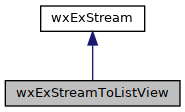

Offers a wxExStream with reporting to a listview. More...
#include <wx/extension/report/stream.h>
Inheritance diagram for wxExStreamToListView:

Public Member Functions | |
| wxExStreamToListView (const wxExPath &filename, const wxExTool &tool) | |
| Constructor. | |
 Public Member Functions inherited from wxExStream Public Member Functions inherited from wxExStream | |
| wxExStream (const wxExPath &filename, const wxExTool &tool) | |
| Constructor. | |
| ~wxExStream () | |
| Destructor. | |
| const auto & | GetFileName () const |
| Returns the filename. | |
| const auto & | GetStatistics () const |
| Returns the statistics. | |
| const auto & | GetTool () const |
| Returns the tool. | |
| bool | RunTool () |
| Runs the tool. | |
Static Public Member Functions | |
| static bool | SetupTool (const wxExTool &tool, wxExFrameWithHistory *frame, wxExListView *report=nullptr) |
| Sets up the tool. More... | |
| Static Public Member Functions inherited from wxExStream | |
| static void | Reset () |
| Resets static members. | |
Additional Inherited Members | |
| Protected Member Functions inherited from wxExStream | |
| auto | IncActionsCompleted (int inc_value=1) |
| Increments the actions completed. | |
| auto | IncStatistics (const std::string &keyword) |
| Increments statistics keyword. | |
Detailed Description
Offers a wxExStream with reporting to a listview.
Member Function Documentation
◆ SetupTool()
|
static |
Sets up the tool.
- Parameters
-
tool tool to use frame frame report listview to which is reported, if nullptr, calls Activate on frame to find report